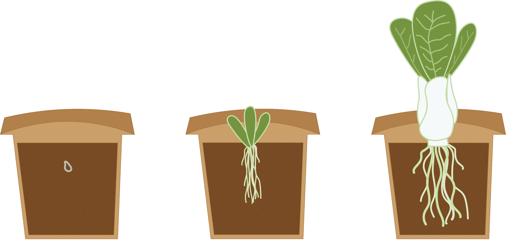
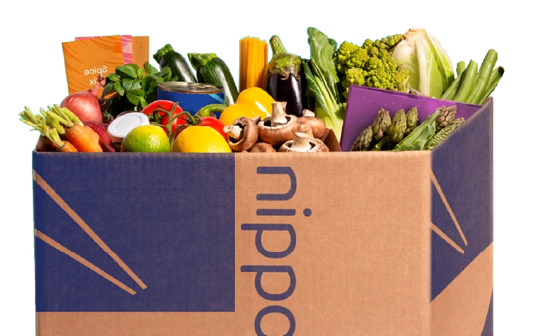

Sådan fungerer det

Vores leverandører
Vi prioriterer lokale økologiske producenter, der deler vores engagement i kvalitet og bæredygtighed, hvilket giver vores kunder en autentisk og samvittighedsfuld spiseoplevelse.

Fra jord til bord
For at holde omkostningerne så lave som muligt har producere vi nogen af vores produkter house i vores verticale have gør det nemt at holde varene friske og klar til enhver årstid.

Vores måltidskasser
Har vi vakt din interesse, kan de se meget mere om vores måltids kasser lige her.